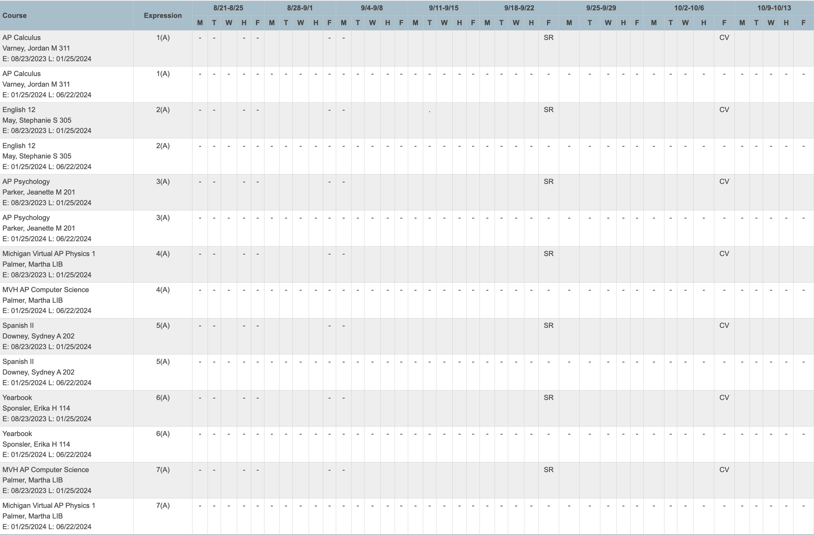
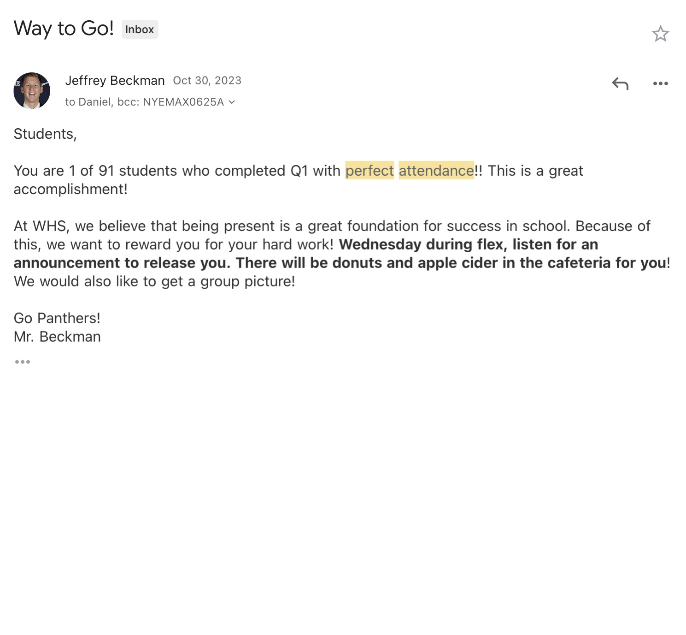
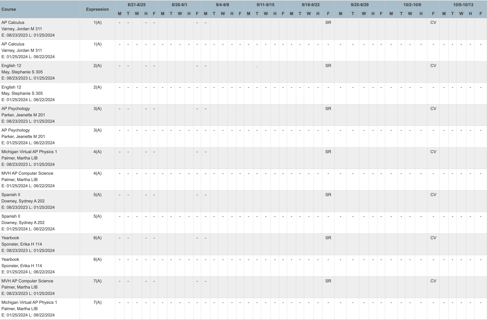
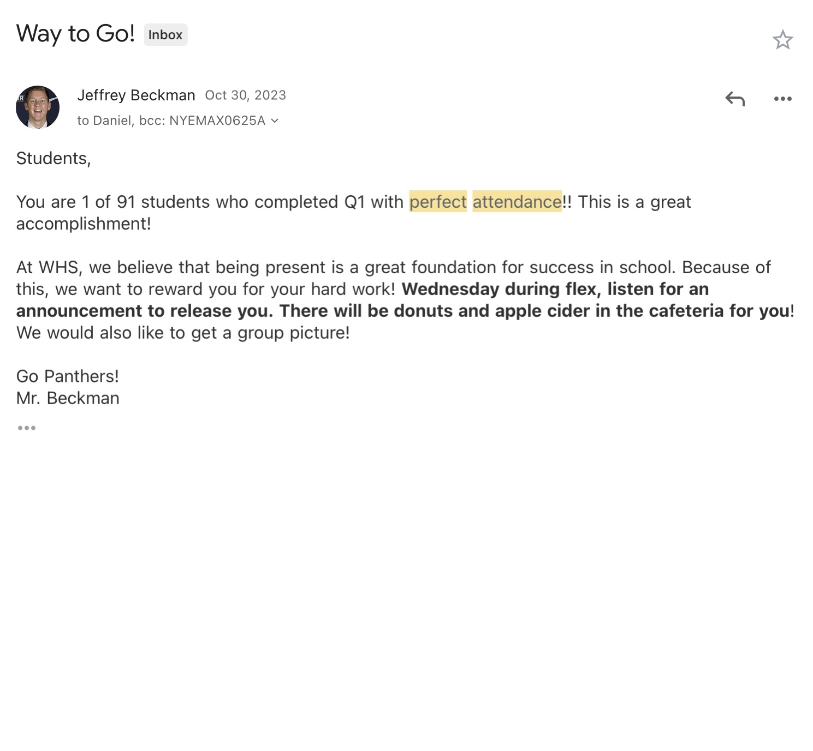

Throughout my academic journey, I have maintained a personal commitment to ensuring that I have no missing assignments, recognizing the correlation between consistent attendance and academic success. This dedication to being present in class has been a priority for me, as it provides the foundation for staying engaged with the material and maximizing learning opportunities. This mindset has extended into my professional life as well, as evidenced by my impeccable attendance record at Walmart, where I have not missed a single day of work except for one instance due to illness. This consistent attendance not only demonstrates my reliability and responsibility but also underscores the importance of punctuality and dedication in both academic and professional settings. Maintaining a strong attendance record not only showcases my dedication but also enhances my credibility as a dependable team member, both in academic and professional environments. As I pursue a career in engineering, having a good school and work attendance record will be essential, as it reflects my commitment to excellence and reliability.
 


